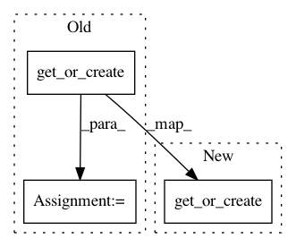

70377c624fdc514cd5897985c67c922cba613c1d,foreman/data_refinery_foreman/surveyor/external_source.py,ExternalSourceSurveyor,queue_downloader_job_for_original_files,#ExternalSourceSurveyor#Any#Any#Any#,116
Before Change
downloaded_urls = []
for original_file in original_files:
asoc = DownloaderJobOriginalFileAssociation.objects.get_or_create(
downloader_job = downloader_job,
original_file = original_file
)[0]
downloaded_urls.append(original_file.source_url)
try:
After Change
downloaded_urls = []
for original_file in original_files:
DownloaderJobOriginalFileAssociation.objects.get_or_create(
downloader_job = downloader_job,
original_file = original_file
)
downloaded_urls.append(original_file.source_url)
try:
In pattern: SUPERPATTERN
Frequency: 4
Non-data size: 3
Instances
Project Name: AlexsLemonade/refinebio
Commit Name: 70377c624fdc514cd5897985c67c922cba613c1d
Time: 2018-08-27
Author: kurt.wheeler91@gmail.com
File Name: foreman/data_refinery_foreman/surveyor/external_source.py
Class Name: ExternalSourceSurveyor
Method Name: queue_downloader_job_for_original_files
Project Name: AlexsLemonade/refinebio
Commit Name: f9d9ad13fa076594a71fef5a043cd9f639fcddce
Time: 2020-07-17
Author: willvauclain.dev@gmail.com
File Name: foreman/data_refinery_foreman/surveyor/sra.py
Class Name: SraSurveyor
Method Name: _generate_experiment_and_samples
Project Name: AlexsLemonade/refinebio
Commit Name: f9d9ad13fa076594a71fef5a043cd9f639fcddce
Time: 2020-07-17
Author: willvauclain.dev@gmail.com
File Name: foreman/data_refinery_foreman/surveyor/geo.py
Class Name: GeoSurveyor
Method Name: create_experiment_and_samples_from_api
Project Name: AlexsLemonade/refinebio
Commit Name: 70377c624fdc514cd5897985c67c922cba613c1d
Time: 2018-08-27
Author: kurt.wheeler91@gmail.com
File Name: foreman/data_refinery_foreman/surveyor/external_source.py
Class Name: ExternalSourceSurveyor
Method Name: queue_downloader_jobs